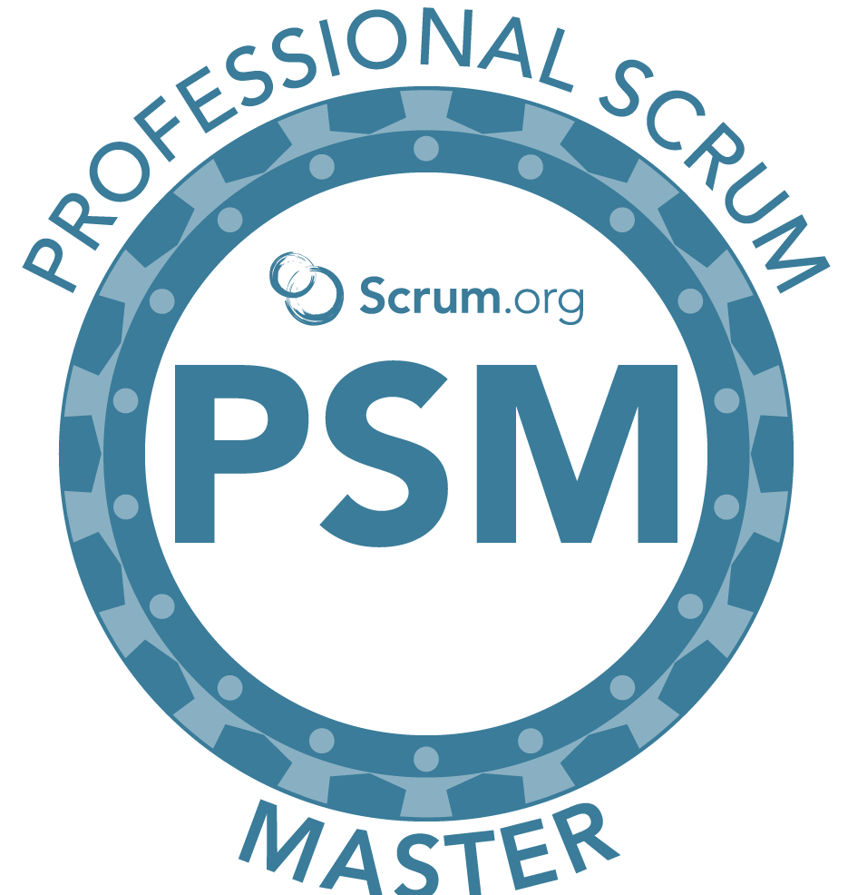

Raman PasalaAutomation Test Engineer |

|
 |
|
SUMMARY:
Over 9 years of experience as a QA Automation Engineer - SDET, extensively worked on Functional, Automation, Testing of Web Client Server, Cloud (Microsoft Azure), Mobile, API, Web services applications. Experience on various domains such as Banking, Financial services and Insurance.
CERTIFACTIONS:
- PSM-1 Certified (Professional scrum master -1)
- Microsoft Azure Fundamentals certified
- ISTQB certified
- Tricentics Tosca –Automation specialist Level 1 Certified
SKILLS:
| Web Automation | ⭐⭐⭐⭐⭐ |
| API Automation | ⭐⭐⭐⭐⭐ |
| Mobile Automation | ⭐⭐⭐ |
| Azure DevOps | ⭐⭐⭐⭐ |
| Web Development | ⭐⭐⭐ |
TECHNICAL SKILL SET:
| Testing Tools: | Selenium WebDriver, TestNG, SoapUI, Cucumber, Specflow, Junit, Webdriver IO, Tricentis Tosca, Postman |
| Defect Tracking Tools: | Quality Centre (ALM), JIRA |
| Req Management Tools: | Quality Centre (ALM), JIRA, Azure Boards |
| Operating System: | Windows, MAC OS, Android |
| Project Methodologies: | SDLC, Agile Scrum, Waterfall |
| Programming Languages: | Java, J2EE, C#, JavaScript |
| Database: | Oracle, SQL server, PLSQL |
| Web Technologies: | HTML, XML, Java, Java Script, SOAP UI, node.js, Bootstrap |
| Frameworks: | Data Driven, BDD, Hybrid, Spring Boot 2.2 |
| Maven | Selenium WebDriver, TestNG, SoapUI, Cucumber, Specflow, Junit, Webdriver IO, Tricentis Tosca, Postman |
| IDE: | Eclipse, Intelij, Visual Studio, Visual Studio Code, Sublime Text |
| CI/CD Tools: | Jenkins, TeamCity and Azure DevOps |
| Version Control: | Bit bucket, Git, SVN, Azure Repos |
Contact Details |
My Git Hub |